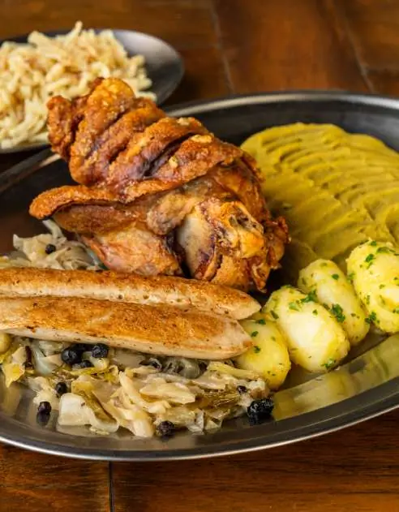

Eisbein à pururuca
Joelho de porco macio e pururuca, purê de ervilha, batatas cozidas, chucrute, cebola tirolesa e linguiça de vitela.
Família329,90
As cores saem da logo: o vermelho e o dourado do vitral e o preto da escrita gótica. O topo lembra a madeira escura do balcão. Transmite calor, cervejaria e tradição.

Joelho de porco macio e pururuca, purê de ervilha, batatas cozidas, chucrute, cebola tirolesa e linguiça de vitela.
Bisteca defumada, purê de ervilha, batatas cozidas…
Individual
199,902 pessoas
Segue o cardápio impresso: creme, verde floresta e dourado. O vermelho fica só na logo. Mantém a mesma linguagem do PDF que já está nas mesas, com um ar mais editorial e sóbrio.
Joelho de porco macio e pururuca, purê de ervilha, batatas cozidas, chucrute, cebola tirolesa e linguiça de vitela.
Bisteca defumada, purê de ervilha, batatas cozidas…
Individual
199,902 pessoas